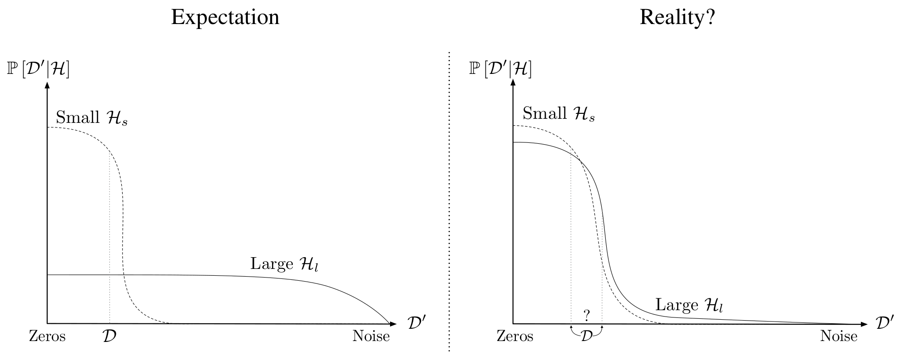
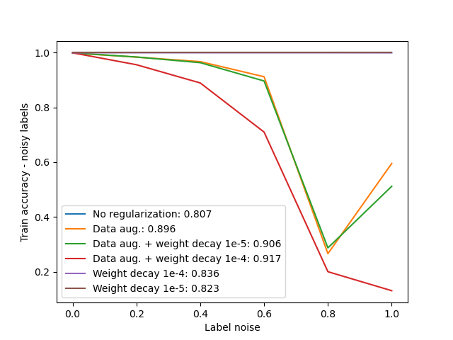
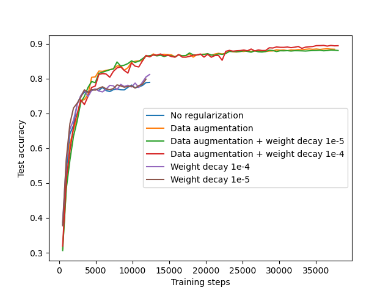

Part I - Deep neural networks can fit arbitrary labellings of the training data¶
The mechanisms governing hypothesis selection in deep learning are currently not fully understood.
According to traditional machine learning, a large hypothesis class (e.g. corresponding to overparameterized models) can fit several datasets of increasing complexity, which practically leads to overfitting training data and noise within. However, in practice, deep networks are able to achieve state-of-the-art performance on several benchmarks, thereby learning generalizing solutions. At the same time, weakly regularized networks can fit arbitrary labellings of the dataset, showing that stochastic optimization, coupled with overparameterization, can in principle memorize a dataset.
A paramount question is thus what factors govern learning vs memorization, and why large, overparameterized networks don't simply memorize the training dataset?
In this assignment, we are going to explore established phenomena that set deep networks aside from traditional machine learning, so that you familiarize yourself with some fundamental open questions in deep learning.

| Source: Novak et al. (2018) |
Introduction¶
In part I, we explore hypothesis selection in deep learning for image classification, by contrasting "learning" and "memorization".
Basically, we examine the empirical behaviour of deep networks trained to perfectly fit noisy labels, as a way to force the model to represent complex decision boundaries. Further, we empirically demonstrate that large networks are capable of completely overfitting a dataset Zhang et al. (2017).
Importantly, corrupting every training label disrupts the semantic relationship between input images and classes, forcing the network to learn decision boundaries tailored to each individual training sample. This will constitute our operative definition of high-complexity classifier memorizing the training set. Changing the ratio of noisy labels allows us to control complexity of our trained statistical model.
In the first part of the assignment, we are going to implement the basic building blocks for our experiments, by reproducing the main result of Zhang et al. (2017).
Tasks¶
Your tasks for this part of the assignment include:
- Corrupting labels of the CIFAR-10 training set.
- Training a small ResNet to fit corrupted labels.
- Discuss the effect of explicit regularization on memorization.
- Discuss implicit regularization in deep learning.
import jax
import jax.numpy as jnp
from flax import linen as nn
from flax.training import train_state
import optax
import numpy as np
from numpy.random import default_rng
import torch
from torchvision.datasets import CIFAR10
from torchvision import transforms
import PIL.Image
from typing import Any, Callable, Sequence, Tuple
from functools import partial
import random
import os
from glob import glob
import matplotlib.pyplot as plt
os.environ['JAX_PLATFORM_NAME'] = 'gpu'
# If running the notebook fails with OOM errors, please consider uncommenting the following line.
# os.environ['XLA_PYTHON_CLIENT_ALLOCATOR'] = 'platform'
# If the notebook is failing at the very beginning with OOM errors, uncomment the following line,
# and tune the amout of preallocated memory according to your system.
# os.environ['XLA_PYTHON_CLIENT_MEM_FRACTION'] = '.80'
"""
==============================
TODO: Configuration required.
==============================
Edit below to set your path to CIFAR-10 and the destination directory for saving checkpoints
In case you don't have a local copy of the dataset, it will be downloaded automatically.
"""
data_dir = "./data" # path to cifar-10-batches-py
checkpoints_dir = "./checkpoints/Part1"
assert os.path.exists(checkpoints_dir),\
"The path you provided does not exist!"\
" Consider creating the folder manually."
The focus of this assignment is on implicit regularization [Neyshabur, Tomioka, and Srebro (2015)], namely that controlled by priors induced by the network architecture, optimizer, as well as the training data itself. Hence, we are going to disable all explicit regularization like weight decay, data augmentation, and batch normalization.
"""
Training hyperparameters
==============================
TODO: Configuration required.
==============================
Set the training hyperparameters by:
1. Disabling explicit regularization
2. Configuring the hyperparameters that control the learning rate schedule
described in Zhang et al. (2017). Specifically, a starting learning rate of
0.1 is decayed by a multiplicative factor of 0.95 at every epoch.
3. To cap the computational cost of this assignment, we set a max number of epochs
to 100.
4. In this assignment, we will explore how a deep network can fit arbitrary labelling of the data,
so we set the noise_ratio to 1.0
"""
cifar10_mean = (0.4919, 0.4822, 0.4465)
cifar10_std = (0.2023, 0.1994, 0.2010)
num_classes = 10
seed = 42
enable_augmentation = False # bool
enable_batch_norm = False # bool
batch_size = 128 # int
noise_ratio = 1.0 # float between 0. and 1.
weight_decay = 0.0 # float
lr = 0.1 # float
lr_decay = 0.95 # float
max_epochs = 100 # int
# I had to move the functions to a different file to avoid multi-processing errors as I'm on a MacOS
from numpy_loader import NumpyLoader
from transforms_custom import ToArray, ArrayNormalize
if enable_augmentation:
transform_train = transforms.Compose([
transforms.RandomCrop(32, padding=4),
transforms.RandomHorizontalFlip(),
ToArray(),
ArrayNormalize(cifar10_mean, cifar10_std)])
else:
transform_train = transforms.Compose([
ToArray(),
ArrayNormalize(cifar10_mean, cifar10_std)])
transform_test = transforms.Compose([
ToArray(),
ArrayNormalize(cifar10_mean, cifar10_std)])
# load CIFAR-10
cifar10_train = CIFAR10(data_dir, download=True, transform=transform_train, train=True)
cifar10_test = CIFAR10(data_dir, download=True, transform=transform_test, train=False)
def corrupt_labels(dataset, noise_ratio, seed=36912):
"""
Corrupt dataset labels
==============================
TODO: Implementation required.
==============================
* Replace a portion of the dataset labels (specificed by @noise_ratio) with random labels.
Random labels should be sampled uniformly, by also ensuring that the ground truth label is never
sampled. @noise_ratio is a float value between 0 and 1, denoting the ratio of corrupted labels.
Conveniently, the skeleton provided loads the labels from @dataset and sets them after corruption.
A check is in place to test whether your implementation is correct.
"""
if noise_ratio == 0.:
return
assert 0. <= noise_ratio <= 1., \
"noise_ratio should be a value between 0 and 1. Got {}".format(noise_ratio)
rng = jax.random.PRNGKey(seed) # set seed for reproducibility
labels = np.array(dataset.targets)
num_classes = len(dataset.classes)
N = len(labels)
# split the dataset with noise ratio
idx = int(np.floor(N * noise_ratio))
if idx == 0:
return
# choosing the indexes to corrupt
corrupt_idxs = jax.random.choice(rng, N, shape=(idx,), replace=False)
orig_labels = labels[corrupt_idxs]
# replace with randomised corrupt labels without the ground truth label for the noise data set
base_labels = jax.random.randint(rng, shape=(idx,), minval=0, maxval=num_classes - 1)
new_labels = base_labels + (base_labels >= orig_labels) # +1 if it is >= to orig label to get a uniform distr
# combine back orig_labels, noisy_labels
labels[corrupt_idxs] = new_labels
# set corrupted labels
dataset.targets = labels
Test the corrupt_labels function:
# test how many labels were corrupted
orig_labels = cifar10_train.targets.copy()
corrupt_labels(cifar10_train, noise_ratio=noise_ratio)
corrupted = np.float64(np.sum(orig_labels != cifar10_train.targets) / len(orig_labels))
expected = np.float64(noise_ratio)
print(f"corrupted:{corrupted}")
print(f"expected:{expected}")
np.testing.assert_allclose(corrupted, expected, verbose=True, rtol=1e-2,
err_msg="Effectively corrupted {}% labels, but {}% required".format(corrupted *100, expected * 100))
# undo the changes
cifar10_train.targets = orig_labels
corrupted:1.0 expected:1.0
# corrupt training labels
corrupt_labels(cifar10_train, noise_ratio=noise_ratio)
# set seed for reproducibilty
torch.manual_seed(seed)
random.seed(seed)
# instantiate data loaders
train_loader = NumpyLoader(cifar10_train, batch_size=batch_size, shuffle=True, drop_last=True, num_workers=4)
test_loader = NumpyLoader(cifar10_test, batch_size=2*batch_size, num_workers=4)
# ResNet model definition
ModuleDef = Any
class ResNetBlock(nn.Module):
"""ResNet basic block"""
filters: int
conv: ModuleDef
norm: ModuleDef
act: Callable
strides: Tuple[int,int] = (1,1)
@nn.compact
def __call__(self, x):
residual = x
y = self.conv(self.filters, (3,3), self.strides)(x)
if self.norm is not None:
y = self.norm()(y)
y = self.act(y)
y = self.conv(self.filters, (3,3))(y)
if self.norm is not None:
y = self.norm(scale_init=nn.initializers.zeros)(y)
if residual.shape != y.shape:
residual = self.conv(self.filters, (1,1), self.strides, name='conv_proj')(residual)
if self.norm is not None:
residual = self.norm(name='norm_proj')(residual)
return self.act(residual + y)
class BottleneckBlock(nn.Module):
"""Bottleneck residual block"""
filters: int
conv: ModuleDef
norm: ModuleDef
act: Callable
strides: Tuple[int, int] = (1, 1)
@nn.compact
def __call__(self, x):
residual = x
y = self.conv(self.filters, (1,1))(x)
if self.norm is not None:
y = self.norm()(y)
y = self.act(y)
y = self.conv(self.filters, (3, 3), self.strides)(y)
if self.norm is not None:
y = self.norm()(y)
y = self.act(y)
y = self.conv(self.filters * 4, (1,1))(y)
if self.norm is not None:
y = self.norm(scale_init=nn.initializers.zeros)(y)
if residual.shape != y.shape:
residual = self.conv(self.filters * 4, (1, 1), self.strides, name='conv_proj')(residual)
if self.norm is not None:
residual = self.norm(name='norm_proj')(residual)
return self.act(residual + y)
class ResNet(nn.Module):
"""ResNet v1"""
stage_sizes: Sequence[int]
block_cls: ModuleDef
num_classes: int = 10 # adapted to CIFAR-10
num_filters: int = 16 # reduced number of filters to decrease training time
dtype: Any = jnp.float32
act: Callable = nn.relu
def setup(self, enable_batch_norm=False):
self.enable_batch_norm = enable_batch_norm
@nn.compact
def __call__(self, x, train: bool = True):
conv = partial(nn.Conv, use_bias = not self.enable_batch_norm, dtype = self.dtype)
if self.enable_batch_norm:
norm = partial(nn.BatchNorm, use_running_average=not train, momentum=0.9, epsilon=1e-5, dtype=self.dtype)
else:
norm = None
x = conv(self.num_filters, (3,3), (1,1),
padding='SAME', name='conv_init')(x)
if self.enable_batch_norm:
x = norm(name='bn_init')(x)
x = nn.relu(x)
x = nn.max_pool(x, (2, 2), strides=(2, 2), padding='SAME')
for i, block_size in enumerate(self.stage_sizes):
for j in range(block_size):
strides = (2, 2) if i > 0 and j == 0 else (1, 1)
x = self.block_cls(self.num_filters * 2 ** i,
strides=strides,
conv=conv,
norm=norm,
act=self.act)(x)
x = jnp.mean(x, axis=(1, 2))
x = nn.Dense(self.num_classes, dtype=self.dtype)(x)
x = jnp.asarray(x, self.dtype)
return x
ResNet18 = partial(ResNet, stage_sizes=[2, 2, 2, 2], block_cls=ResNetBlock)
Next, we define the training loop as well as some utilty functions. We will train the network until 100% training accuracy is reached, or for a maximum of max_epochs, to cap the computational cost of this exercise.
Your tasks are:
- Implement an exponential learning rate schedule.
- Compute and store training (and validation) loss and accuracy.
- Implement the convergence criterion.
- Train ResNet-18 until the convergence criterion is met.
Training Utilities¶
def compute_metrics(logits, labels):
"""Given the model predictions @logits and ground-truth @labels compute
loss and accuracy.
==============================
TODO: Implementation required.
==============================
* Compute the average cross-entropy loss over a batch, using the unnormalized network
predictions @logits, and the ground-truth @labels.
* Before computing the cross-entropy loss, the logits should be normalized.
Hint: The optax package allows to apply both softmax and cross-entropy loss
to the logits at the same time.
* Finally, for computing the loss, each label should be 1-hot-encoded. You can use
``jax.nn.one_hot()``.
"""
num_classes = logits.shape[1]
labels_one_hot = jax.nn.one_hot(labels, num_classes)
# compute cross entropy loss
# optax takes unnormalized loss
cross_entropy = optax.softmax_cross_entropy(logits, labels_one_hot)
loss = np.mean(cross_entropy)
# compute accuracy
predictions = jnp.argmax(logits, axis=1)
accuracy = (predictions == labels).mean()
metrics = {
'loss': loss,
'accuracy': accuracy,
}
return metrics
Test the compute_metrics function:
logits = jnp.array([[1.,2.,0.,-1.],
[0.,2.,-5.,1.],
[1.,1.,5.,-1.]])
labels = jnp.array([1,
0,
2])
returned = compute_metrics(logits,labels)
expected_mean_sce_loss = np.array(0.9622556)
expected_mean_accuracy = np.array(0.6666666)
print(f"computed loss:{returned['loss']}")
print(f"computed accuracy:{returned['accuracy']}")
assert returned['loss'].shape == (), \
'softmax cross-entropy loss is expected here to be averaged over samples'
assert returned['accuracy'].shape == (), \
'accuracy is expected here to be averaged over samples'
np.testing.assert_almost_equal(expected_mean_sce_loss, returned['loss'])
np.testing.assert_almost_equal(expected_mean_accuracy, returned['accuracy'])
computed loss:0.9622554779052734 computed accuracy:0.6666666865348816
def get_lr_scheduler(base_lr, lr_decay, steps_per_epoch):
""" Initialize learning rate scheduler
Parameters:
base_lr: initial learning rate
lr_decay: learning rate decay coefficient
steps_per_epoch: number of sgd steps in one training epoch
==============================
TODO: Implementation required.
==============================
Implement an exponential learning rate decay schedule, as proposed by Zhang et al. (2017) to fit
corrupted labels.
Hint: Look at the ``optax`` documentation for available learning
rate schedulers and how to use them.
"""
scheduler = optax.schedules.exponential_decay(init_value=base_lr, transition_steps=steps_per_epoch, decay_rate=lr_decay)
return scheduler
Test the get_lr_scheduler function:
returned = get_lr_scheduler(1e-4, 0.95, 100)
print(f"returned lr:{returned(11)}")
assert callable(returned), "get_lr_scheduler function is expected to return another function that acts on the number of steps."
expected_lr = np.array(9.943736e-05)
np.testing.assert_almost_equal(expected_lr, returned(11))
returned lr:9.943736222339794e-05
def stopping_criterion(accuracy):
"""Check whether 100% training accuracy is reached
==============================
TODO: Implementation required.
==============================
The method should return True if accuracy is close to 1.0, and False otherwise.
"""
tol = 1e-3
is_converged = np.isclose(accuracy, 1.0, atol=tol)
return is_converged
Test the stopping_criterion function:
returned = stopping_criterion(.999)
expected_lr = np.array(True)
np.testing.assert_equal(expected_lr, returned)
# training utilities
def create_train_state(rng):
""" Initialize network and optimizer
"""
net = ResNet18(num_classes=num_classes)
params = net.init(rng, jnp.ones((1, 32, 32, 3)))['params']
learning_rate_scheduler = get_lr_scheduler(lr, lr_decay, steps_per_epoch=len(train_loader))
tx = optax.sgd(learning_rate_scheduler, momentum=0.9, nesterov=False)
return train_state.TrainState.create(
apply_fn=net.apply, params=params, tx=tx)
@jax.jit
def train_step(state, batch):
"""Train for one step
"""
def compute_loss(params):
"""Cross-entropy loss with weight decay
"""
logits = ResNet18().apply({'params': params}, batch['image'])
loss = jnp.mean(
optax.softmax_cross_entropy(logits=logits, labels=jax.nn.one_hot(batch['label'], num_classes)))
weight_penalty_params = jax.tree.leaves(params)
weight_l2 = sum(
[jnp.sum(x ** 2) for x in weight_penalty_params if x.ndim > 1])
weight_penalty = weight_decay * 0.5 * weight_l2
loss = loss + weight_penalty
return loss, logits
grad_fn = jax.value_and_grad(compute_loss, has_aux=True)
(_, logits), grads = grad_fn(state.params)
state = state.apply_gradients(grads=grads)
metrics = compute_metrics(logits=logits, labels=batch['label'])
return state, metrics
@jax.jit
def eval_step(params, batch):
"""Evaluate ResNet18 on batch using params.
"""
logits = ResNet18().apply({'params': params}, batch['image'], train=False)
return compute_metrics(logits=logits, labels=batch['label'])
def train_epoch(state, train_loader, epoch):
"""Train for one epoch
"""
batch_metrics = []
for input_img, target in train_loader:
batch = {
'image': input_img,
'label': target,
}
state, train_metrics_ep = train_step(state, batch)
batch_metrics.append(train_metrics_ep)
batch_metrics_np = jax.device_get(batch_metrics)
epoch_metrics_np = {
k: np.mean([metrics[k] for metrics in batch_metrics_np])
for k in batch_metrics_np[0]
}
print("epoch: {}, train loss: {}, train accuracy: {}".format(
epoch, epoch_metrics_np['loss'], epoch_metrics_np['accuracy']))
return state, epoch_metrics_np
def eval_model(epoch, params, test_loader):
"""Evaluate model on test set
"""
batch_metrics = []
for input_img, target in test_loader:
batch = {
'image': input_img,
'label': target,
}
metrics = eval_step(params, batch)
batch_metrics.append(metrics)
batch_metrics_np = jax.device_get(batch_metrics)
epoch_metrics_np = {
k: np.mean([metrics[k] for metrics in batch_metrics_np])
for k in batch_metrics_np[0]
}
print("epoch: {}, test loss: {}, test accuracy: {}".format(
epoch, epoch_metrics_np['loss'], epoch_metrics_np['accuracy']))
return epoch_metrics_np
def save_checkpoint(savedir, train_state, epoch):
"""Save train_state to savedir"""
state_dict = {
'epoch': epoch,
'state': train_state.params,
}
save_path = os.path.join(savedir,
"resnet18_" + str(epoch) + '.pickle')
torch.save(state_dict, save_path)
print("Saving model checkpoint to {}.".format(save_path))
def try_cast(maybe_number):
try:
number = int(maybe_number)
return number
except:
return None
def load_checkpoint(savedir):
"""
Loads the latest checkpoint from savedir
returns `None` if no checkpoint has been found.
"""
save_path = glob(checkpoints_dir+'/*.pickle')
path_dict = {}
path_sections = map(
lambda x:x.replace(".pickle","").split("_")[-1],
save_path)
for i,maybe_num in enumerate(path_sections):
num = try_cast(maybe_num)
if num is not None:
path_dict[num] = save_path[i]
if len(path_dict) != 0:
latest_checkpoint = sorted(path_dict.items(),
key=lambda x: x[1])[-1][1]
state_dict = torch.load(latest_checkpoint)
print("Loading model from checkpoint {}.".format(latest_checkpoint))
return state_dict
else:
return None
def load_train_state(state_dict):
net = ResNet18(num_classes=num_classes)
params = state_dict['state']
start_step = state_dict['epoch']*len(train_loader)
learning_rate_scheduler = get_lr_scheduler(lr, lr_decay, steps_per_epoch=len(train_loader))
def scheduler_with_offset(step):
return learning_rate_scheduler(step + start_step)
tx = optax.sgd(scheduler_with_offset, momentum=0.9, nesterov=False)
return train_state.TrainState.create(
apply_fn=net.apply, params=params, tx=tx)
def train_and_evaluate():
"""Train and evaluate model"""
# Initialize model
rng = jax.random.PRNGKey(seed)
state_dict = load_checkpoint(checkpoints_dir)
if state_dict is None:
state = create_train_state(rng)
save_checkpoint(checkpoints_dir,
state,
'init')
start_epoch = 0
else:
state = load_train_state(state_dict)
start_epoch = state_dict['epoch']+1
metrics = {
'train': {
'loss' : [],
'accuracy': [],
},
'test': {
'loss': [],
'accuracy': [],
},
}
for epoch in range(start_epoch, max_epochs):
state, train_metrics = train_epoch(state, train_loader, epoch)
if stopping_criterion(train_metrics['accuracy']):
print("Stopping criterion reached: train accuracy = {}".format(train_metrics['accuracy']))
break
if epoch % 10 == 0:
test_metrics = eval_model(epoch, state.params, test_loader)
save_checkpoint(checkpoints_dir, state, epoch)
for key in train_metrics:
metrics['train'][key].append(train_metrics[key])
metrics['test'][key].append(test_metrics[key])
save_checkpoint(checkpoints_dir, state, epoch)
test_metrics = eval_model(epoch, state.params, test_loader)
for key in test_metrics:
metrics['train'][key].append(train_metrics[key])
metrics['test'][key].append(test_metrics[key])
return state, metrics, epoch
# Train model
trained_state, metrics, last_epoch = train_and_evaluate()
Saving model checkpoint to ./checkpoints/Part1/resnet18_init.pickle. epoch: 0, train loss: 2.1600735187530518, train accuracy: 0.1246594563126564 epoch: 0, test loss: 2.5060923099517822, test accuracy: 0.111328125 Saving model checkpoint to ./checkpoints/Part1/resnet18_0.pickle. epoch: 1, train loss: 2.151775598526001, train accuracy: 0.12796474993228912 epoch: 2, train loss: 2.1482291221618652, train accuracy: 0.13078926503658295 epoch: 3, train loss: 2.1464128494262695, train accuracy: 0.13537660241127014 epoch: 4, train loss: 2.1426303386688232, train accuracy: 0.13501602411270142 epoch: 5, train loss: 2.138727903366089, train accuracy: 0.14006410539150238 epoch: 6, train loss: 2.1341590881347656, train accuracy: 0.14284855127334595 epoch: 7, train loss: 2.1303329467773438, train accuracy: 0.14743590354919434 epoch: 8, train loss: 2.1252152919769287, train accuracy: 0.14711537957191467 epoch: 9, train loss: 2.1182353496551514, train accuracy: 0.15558893978595734 epoch: 10, train loss: 2.1113059520721436, train accuracy: 0.1611778885126114 epoch: 10, test loss: 2.3524370193481445, test accuracy: 0.23798827826976776 Saving model checkpoint to ./checkpoints/Part1/resnet18_10.pickle. epoch: 11, train loss: 2.1050162315368652, train accuracy: 0.16678686439990997 epoch: 12, train loss: 2.0914230346679688, train accuracy: 0.1762019246816635 epoch: 13, train loss: 2.0807979106903076, train accuracy: 0.1840144246816635 epoch: 14, train loss: 2.06413197517395, train accuracy: 0.19433093070983887 epoch: 15, train loss: 2.0464398860931396, train accuracy: 0.20647035539150238 epoch: 16, train loss: 2.0300981998443604, train accuracy: 0.2143629789352417 epoch: 17, train loss: 2.009486198425293, train accuracy: 0.22714343667030334 epoch: 18, train loss: 1.9818027019500732, train accuracy: 0.24178685247898102 epoch: 19, train loss: 1.951462984085083, train accuracy: 0.2595352530479431 epoch: 20, train loss: 1.9182120561599731, train accuracy: 0.2731570601463318 epoch: 20, test loss: 2.7127902507781982, test accuracy: 0.18154296278953552 Saving model checkpoint to ./checkpoints/Part1/resnet18_20.pickle. epoch: 21, train loss: 1.8804404735565186, train accuracy: 0.29314902424812317 epoch: 22, train loss: 1.8514870405197144, train accuracy: 0.3083133101463318 epoch: 23, train loss: 1.796336054801941, train accuracy: 0.33343347907066345 epoch: 24, train loss: 1.7490204572677612, train accuracy: 0.3563501536846161 epoch: 25, train loss: 1.6958714723587036, train accuracy: 0.3754206597805023 epoch: 26, train loss: 1.6364349126815796, train accuracy: 0.4012620151042938 epoch: 27, train loss: 1.5770504474639893, train accuracy: 0.4246995151042938 epoch: 28, train loss: 1.5110834836959839, train accuracy: 0.45232370495796204 epoch: 29, train loss: 1.4393479824066162, train accuracy: 0.47872596979141235 epoch: 30, train loss: 1.3813337087631226, train accuracy: 0.5050681233406067 epoch: 30, test loss: 3.4748568534851074, test accuracy: 0.14462891221046448 Saving model checkpoint to ./checkpoints/Part1/resnet18_30.pickle. epoch: 31, train loss: 1.3004850149154663, train accuracy: 0.532892644405365 epoch: 32, train loss: 1.2316590547561646, train accuracy: 0.5573317408561707 epoch: 33, train loss: 1.1733949184417725, train accuracy: 0.5797476172447205 epoch: 34, train loss: 1.0962921380996704, train accuracy: 0.6098157167434692 epoch: 35, train loss: 1.0120320320129395, train accuracy: 0.6409655213356018 epoch: 36, train loss: 0.9379479885101318, train accuracy: 0.6674679517745972 epoch: 37, train loss: 0.8497076630592346, train accuracy: 0.7013021111488342 epoch: 38, train loss: 0.7915626168251038, train accuracy: 0.7225160002708435 epoch: 39, train loss: 0.7401804327964783, train accuracy: 0.7430288195610046 epoch: 40, train loss: 0.6648807525634766, train accuracy: 0.7677083611488342 epoch: 40, test loss: 5.4612274169921875, test accuracy: 0.134765625 Saving model checkpoint to ./checkpoints/Part1/resnet18_40.pickle. epoch: 41, train loss: 0.6098597645759583, train accuracy: 0.7883613705635071 epoch: 42, train loss: 0.5356268882751465, train accuracy: 0.8150641322135925 epoch: 43, train loss: 0.47484827041625977, train accuracy: 0.836678683757782 epoch: 44, train loss: 0.431958943605423, train accuracy: 0.8515424728393555 epoch: 45, train loss: 0.38620612025260925, train accuracy: 0.8681290149688721 epoch: 46, train loss: 0.3104051947593689, train accuracy: 0.8956129550933838 epoch: 47, train loss: 0.2809408903121948, train accuracy: 0.9055288434028625 epoch: 48, train loss: 0.22535230219364166, train accuracy: 0.9251803159713745 epoch: 49, train loss: 0.1962323635816574, train accuracy: 0.9344350695610046 epoch: 50, train loss: 0.15134434401988983, train accuracy: 0.9494391083717346 epoch: 50, test loss: 10.260942459106445, test accuracy: 0.14169922471046448 Saving model checkpoint to ./checkpoints/Part1/resnet18_50.pickle. epoch: 51, train loss: 0.11592632532119751, train accuracy: 0.9614182710647583 epoch: 52, train loss: 0.09610844403505325, train accuracy: 0.9696915149688721 epoch: 53, train loss: 0.07326184958219528, train accuracy: 0.9765424728393555 epoch: 54, train loss: 0.050267528742551804, train accuracy: 0.9853966236114502 epoch: 55, train loss: 0.027681540697813034, train accuracy: 0.9922275543212891 epoch: 56, train loss: 0.013171451166272163, train accuracy: 0.9972956776618958 epoch: 57, train loss: 0.0049136485904455185, train accuracy: 0.9995392560958862 Stopping criterion reached: train accuracy = 0.9995392560958862 Saving model checkpoint to ./checkpoints/Part1/resnet18_57.pickle. epoch: 57, test loss: 13.883337020874023, test accuracy: 0.13417968153953552
# plot training statistics
fig, axs = plt.subplots(3, figsize=(10,10), sharex=True)
epochs = np.arange(len(metrics['test']['loss'])) * 10
if last_epoch % 10 != 0:
epochs[-1] = last_epoch
axs[0].plot(epochs, metrics['train']['loss'], label='train loss')
axs[0].plot(epochs, metrics['test']['loss'], label='test loss')
axs[0].legend(loc='upper right')
axs[0].set_ylabel('loss')
axs[1].plot(epochs, metrics['train']['accuracy'], label='train acc')
axs[1].plot(epochs, metrics['test']['accuracy'], label='test acc')
axs[1].legend(loc='center right')
axs[1].set_ylabel('accuracy')
axs[1].set_ylim(0., 1.0)
# plot learning rate schedule
num_batches = len(train_loader)
lr_scheduler = get_lr_scheduler(
lr, lr_decay, steps_per_epoch=num_batches)
lr_schedule = [jax.device_get(lr_scheduler(epoch * num_batches)).item() for epoch in epochs]
axs[2].plot(epochs, lr_schedule)
axs[2].set_ylabel('learning rate')
axs[2].set_xlabel('epochs')
Text(0.5, 0, 'epochs')
![No description has been provided for this image]()
Explicit regularization¶
If unregularized networks can fit arbitrary labellings of the data, what factors control the learning of patterns that generalize to unseen data? Is the success of deep learning simply explained by the right choice of explicit regularization?
The following plot shows the effectiveness of several regularization techniques at contrasting memorization, by comparing the training accuracy reached under several degrees of label noise. Furthermore, for each combination of regularization techniques, the best validation accuracy on clean labels is reported in the legend of the plot.

Questions¶
- Which technique is most effective at hindering memorization? I think the technique with decaying training accuracy as the label noise increases and reaches to 1.0 is the most effective at hindering memorization and which had the highest validation accuracy on clean labels data, i.e., the technique combined with Data Augmentation and weight decay of 1e-4.
- Which technique yields the best performance when no corrupted training labels are present? - All of them yield the same performance of near 100 percent when label noise was 0.0. But, with the clean labels data, the technique combined with Data Augmentation and weight decay of 1e-4 achieves the best performance of 91.7% validation accuracy.
- Is learning only possible with explicit regularization? Motivate! - No, Learning is definitely beneficial with explicit regularization techniques. With no regularization, the model achieves near 100 percent training accuracy on various ratios of label noise equally but only 80.7% validation accuracy on clean labels data, which indicates that it fails to generalize and there was definite memorization involved. With explicit regularization, we were able to reduce the training accuracy gradually with noisy labels training. We were also able to achieve higher validation accuracy on clean labels for each case of explicit regularization, which indicates that it guides the model toward learning meaningful patterns instead of memorizing noise. So, deep networks can fit anything, but regularization ensures they learn useful structure rather than noise.
Implicit regularization¶
In this last plot, several regularization techniques are compared on clean labels, against learning without explicit regularization. All networks have been trained until a target training cross-entropy loss value of $0.19$ was reached.

- What do you observe? Is explicit regulaziation needed for achieving non-trivial performance? Yes, explicit regularization is needed to achieve non-trivial performance. The model with no regularization technique was able to achieve the target training cross-entropy loss of 0.19 in only 12500 steps, but, it was only able to reach a trivial training accuracy of 80%. With explicit regularization, we were able to achieve 90%, specifically involving data augmentation. But, even the unregularized model generalizes well despite being capable of memorizing data. This suggests that something about the training dynamics or model structure implicitly regularizes learning — guiding the model toward simple, generalizable solutions even without explicit penalties like weight decay or augmentation.
- If explict regularization alone does not explain learning, could you speculate on what factors, implicit in standard deep learning, are responsible for generalization? Even though explicit methods help, they don’t tell the full story. Deep networks still generalize better than expected even with minimal regularization, suggesting additional implicit factors at play:
- Network architecture priors: Convolutional networks are designed to look for patterns that repeat, hence they naturally focus on useful, general features instead of memorizing random details — even without extra regularization.
- Optimization bias: SGD naturally prefers flatter minima in the loss landscape, which correspond to simpler, more generalizable solutions rather than overfitted ones.
Next steps¶
The code provided in this notebook is slightly more general than what is required to solve the assignment. In fact, you can use the code to train your networks on clean labels, for instance by also enabling data augmentation and batch normalization. If you choose to do so, you probably need to tweak the learning rate schedule as well. Below, one example of a piece-wise constant learning rate policy, often used in practice, is provided.
You can use the schedule proposed to train a VGG-11 network, on clean labels (label_noise = 0.), with data augmentation. For such network, it is suggested to use a small weight decay, like $1\rm{e}-4$ and start with a smaller initial learning rate lr = 0.01. Such network will be needed for completing the optional task of Part II.
num_batches = len(train_loader)
step_lr_schedule_args = {30 * num_batches: 0.5, 60 * num_batches: 0.5, 90 * num_batches: 0.5}
scheduler = optax.piecewise_constant_schedule(init_value=lr, boundaries_and_scales=step_lr_schedule_args)
Finally, it is valuable for us to know how long did it take you to complete this practical. 6 hours
Acknowledgements¶
The data loading boilerplate code and the training algorithm are adapted from the official JAX documentation.
ResNet definition adapted from the official FLAX ImageNet example.
PIL to numpy array transforms are adapted from the following CIFAR-10 example.
References¶
- Understanding deep learning requires rethinking generalization - Zhang et al. ICLR 2017.
- A Closer Look at Memorization in Deep Networks - Arpit et al. ICML 2017.
- Sensitivity and Generalization in Neural Networks: an Empirical Study - Novak et al. ICLR 2018.
- In Search of the Real Inductive Bias: On the Role of Implicit Regularization in Deep Learning - Neyshabur, Tomioka, and Srebro. ICLR Workshop Track 2015.
Changelog¶
| Version | Contribution | Author (Affiliation) | Contact | |--------- |------------------- |----------------------------------- |--------- | | 1.0 | First development | Matteo Gamba (KTH/EECS/RPL) | |